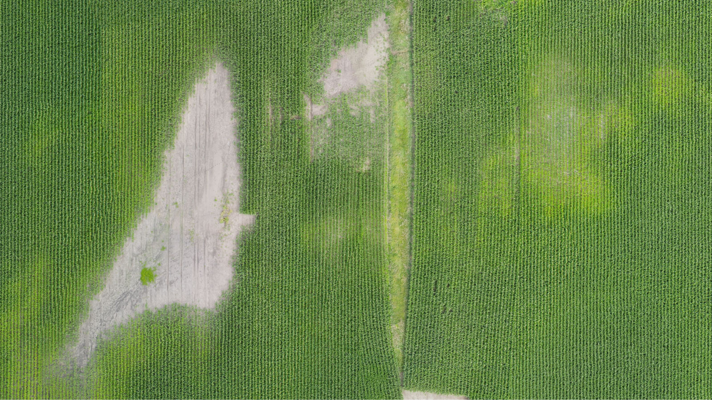
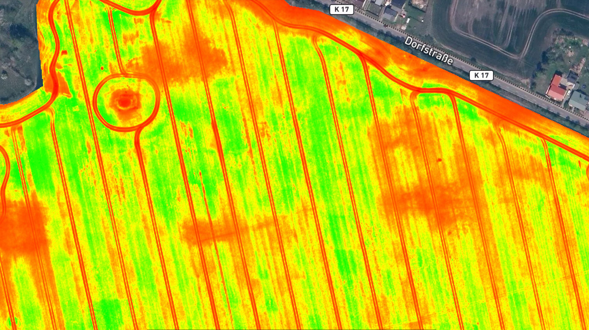
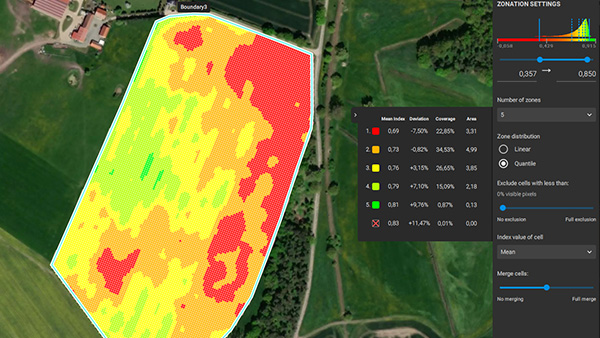
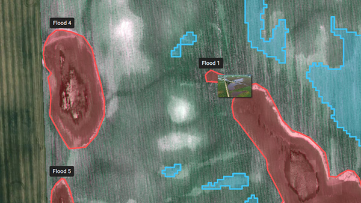
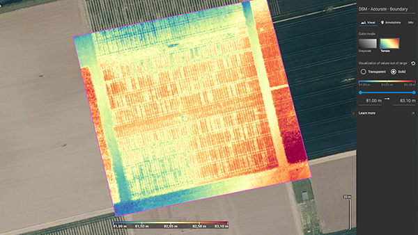
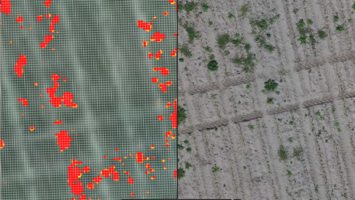

Start with a Field Review
We discuss crop, acreage, timing, known concerns, and the decision you need to make.
Agricultural Drone Mapping & Field Intelligence
Falcon helps growers identify field variation, prioritize scouting, and plan targeted action with practical aerial analytics.
Maps, zones, and reports designed to help you decide where to inspect, what to verify, and where targeted treatment may make sense.
How to Engage Falcon
We discuss crop, acreage, timing, known concerns, and the decision you need to make.
Falcon recommends a one-time scan, seasonal monitoring, targeted investigation, or treatment planning support.
We walk through field maps, crop health patterns, zones, and the areas that deserve attention.
Use the results to guide scouting, sampling, treatment planning, documentation, or further agronomic review.
Analytics
You receive visual maps and plain-English summaries designed to help decide where to scout, what areas need attention, and where targeted action may make sense.






Clear aerial context for the area being evaluated.
Visual indication of vigor, stress, or performance variation.
Grouped areas for scouting, treatment planning, or follow-up review.
Marked observations, notes, measurements, and points of interest.
Elevation-style context that can help reveal drainage, terrain, or canopy patterns.
Planning outputs for compatible targeted application workflows.
Contact
Tell us what you grow, what you are seeing, and what decision you need to make.